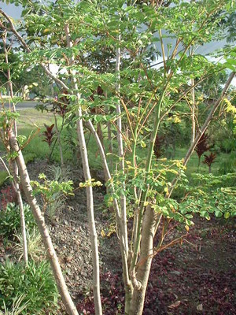

kelemunggay 
/kɔlɔmu/
n.
Morenga_oleifera
horse raddish tree
Ka kelemunggay iyan ka ngaran te pinamula ne egpekeiling te kayù ne mallilintek ka dewun wey egkakeen. Mesì dakel e wey egpakatimpe e te kalayat te etew ne egmanusugpang e.
Meupiya ne igpamula ka kelemunggay su mahaan dè egtubù minsan igpes-ek dè.
A horse radish is good to plant because it grow quickly even posting it only.
Mananam naan dè iya ka egsabawan ne peit ke eg-amutan te kelemunggay.
A fish soup is a very tasty when it is mixed with horse radish.
Eng. horse radish; leafy vegetable
Tag. malunggay
Ceb. kalamunggay; kamalongan; balungai
OCM: Flora (137)
DDP: Tree (1.5.1)
Online dict status: -
Usage level: F
Updated by: TME,QDL
Last updated: 13/Oct/2009
This page last updated: 28-Dec-2019
Copyright © 2009-2014, Matigsalug Language Christian Association, Inc